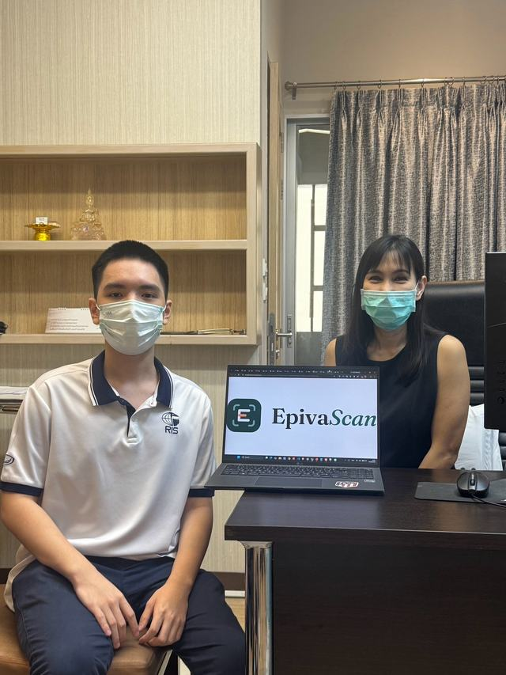

Validation
Shaped in the clinic, with dermatologists.
EpivaScan is being developed alongside skin doctors in Bangkok. In each consultation a dermatologist works through the app with us, photo by photo, and tells us where its matches agree with their own reading and where they don’t.
The process
What happens in a consultation.
-
1
Walk through the app
The dermatologist sees the whole flow, from adding a photo to reading the list of matches.
-
2
Read the matches together
We go through results on skin photos and compare them with how the dermatologist reads the same image.
-
3
Take it back to the build
Their notes feed the next version: which conditions to cover, how results are worded, and when to send someone to a clinician.
Consultation 01
Reading the results, side by side.
A dermatologist sat with us in their clinic office and went through the scan on the laptop, one skin photo at a time, questioning each match the app put forward.
- Specialist
- Dermatologist
- Where
- Clinic office, Bangkok
- Format
- In person, app walkthrough on a laptop
- Photos
- 11

11
Consultation 02
A second dermatologist, a second look.
A second dermatologist watched the scan run, pointed out what to look for in each photo, and then sat down with us to go through the results in detail.
- Specialist
- Dermatologist
- Where
- Clinic office, Bangkok
- Format
- In person, app walkthrough on a laptop
- Photos
- 16
 06
06


Expert feedback, not a clinical trial. These consultations guide how EpivaScan is built. They don’t make it a diagnosis. Accuracy figures will be published on the model page once testing is complete.
Are you a dermatologist?
We’d like to show you EpivaScan and hear what you think. Every consultation changes what we build next.